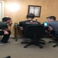

Adam Nguyen
I am currently a second-year student majoring in Biochemistry with an emphasis in medicine at the University of California, Riverside. Over the past few years, I have volunteered over the summer at my church’s summer camp as well as the camp that my Alma Mater hosts every winter and summer as a camp counsellor and their Head Lifeguard. As Head Lifeguard, I was responsible for ensuring that all the swim times were supervised by the appropriate amount of staff and making sure the campers left in an orderly and timely fashion so as to get to their next rotation on time. As a counsellor, I was also in charge of overseeing my team and offering them support in whatever capacity they needed, whether it was as emotional or authoritative support. In my time as a counsellor overseeing teams, I am proud to say that I was in charge of a team that ended up winning many of the camp tournaments and ended up taking home the nest team award while I took the best counsellor award.
During my senior year of high school, I was nominated secretary of the Knights of the Immaculata Club at my school. I was put in charge of organizing trips, fundraisers and planning out our itineraries. While doing so, I would coordinate with our chaplain, captain, treasurer, school headmaster, possible bus drivers and our school’s athletic director in order to secure transportation as well as approval for our planned itineraries. On top of all of this, I was in charge of overseeing the application process for the camps as well as making sure all the campers had their insurance and medical records on hand in case of an emergency. In order to ensure a smooth transition for the next secretary, I trained several possible candidates from the junior class to be treasurers and secretaries as we worked in close conjunction for our main fundraisers i.e. the fall festival booths, the Christmas Concert and the Spring Concert. We would organize shifts and ensure that there were club members available to fill out the shifts and to help run our concession stand, ticket booth and the various games that we hosted.
Experience
Secretary
• Organized meeting agendas
• Planned trip itineraries
• Promoted fundraisers and events
Camp Counselor
• Head lifeguard
• Coordinated arts and crafts projects
• Supervised a team of eight kids grom age 7-16
• Assisted the Camp Nurse in basic first aid
Education
University of California Riverside
Portfolio
